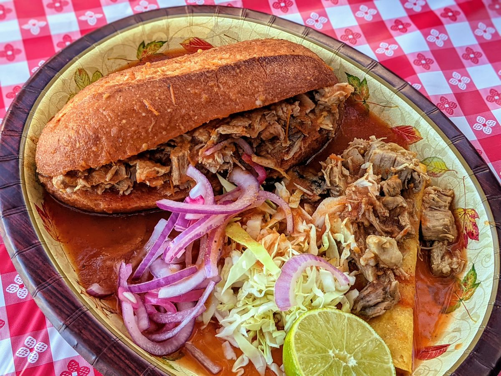

Torta Ahogada
Served with a spicy beef broth for dipping, these roast beef sandwiches on crusty rolls a variation on a
traditional
Mexican 'drowned sandwich' make a hearty lunch or quick dinner.

Ingredients
- 12 ounces chipotle cooking sauce (such a Knorr®)
- 1 (14 ounce) can reduced-sodium beef broth
- ¼ cup chopped fresh cilantro (Optional)
- 2 tablespoons vegetable oil
- 1 onion, thinly sliced
- 3 cloves garlic, minced
- 1 pound thinly sliced deli roast beef
- 4 bolillo rolls, halved and lightly toasted
- 4 sprigs fresh cilantro, or to taste (Optional)
Steps
- Combine chipotle cooking sauce, beef broth, and 1/4 cup chopped cilantro in a saucepan; bring to a boil. Reduce
heat to
medium-low and simmer, stirring occasionally, for 10 minutes.
- Heat oil in a skillet over medium-high heat; saute onion until softened, about 5 minutes. Stir garlic into onion
and
cook for 1 minute. Add roast beef and 1/4 cup chipotle sauce mixture and cook, stirring constantly, until heated
through, about 2 minutes.
- Ladle remaining chipotle sauce mixture into 4 bowls for dipping. Spoon roast beef mixture onto the bottom half
of each
bun, top with a cilantro sprig, and place the top on each bun. Dip sandwiches into sauce.
Home